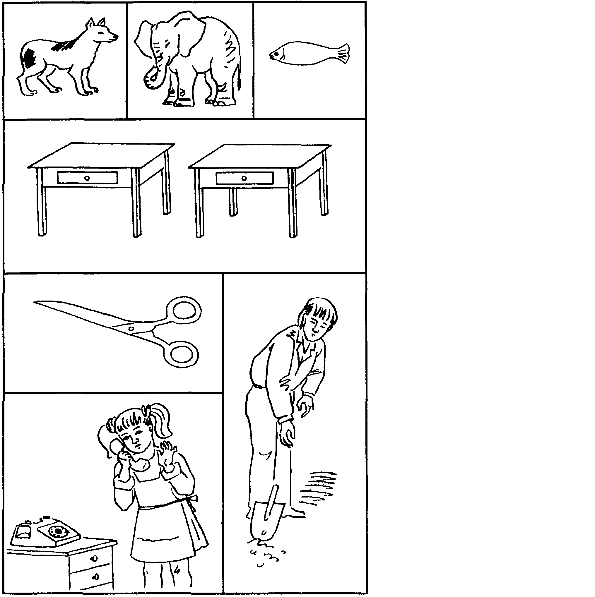

Прежде чем излагать конкретные методики психодиагностики познавательных процессов: восприятия, внимания, воображения, памяти, мышления и речи – у дошкольников, рассмотрим понятие «стандартизированный комплекс психодиагностических методик», которое уже встречалось и будет еще неоднократно упоминаться в тексте.
Под стандартизированным комплексом психодиагностических методик для детей определенного возраста понимается минимальный по числу включаемых в него методик набор, необходимый и достаточный для того, чтобы разносторонне, во всех существенных качествах и свойствах оценить психологию детей данного возраста, определить уровень психологического развития ребенка в целом и по отдельным качествам и свойствам. Под словом «стандартизация», включенным в название комплекса, понимается возможность получения с помощью всех этих методик одинаковых по природе и сравнимых показателей, которые позволяют определять уровень развития у данного ребенка отдельных познавательных процессов, сравнивать между собой степень развития у него же разных познавательных процессов и следить за развитием ребенка из года в год. Кроме того, стандартизация предполагает использование для всех методик единой оценочной шкалы.
Большинство описываемых в этом разделе методик (это относится не только к диагностике дошкольников, но и детей любого возраста, а также взрослых людей) позволяет получать показатели психологического развития, выражаемые в стандартизированной, десятибалльной шкале. При этом показатели, находящиеся в пределах от 8 до 10 баллов, в большинстве случаев свидетельствуют о наличии у ребенка выраженных способностей или задатков к их развитию. Показатели в пределах от 0 до 3 баллов – о том, что у ребенка имеется серьезное отставание в психологическом развитии от большинства других детей. Показатели, оказавшиеся в пределах диапазона 4-7 баллов, – о том, что данный ребенок по уровню развития соответствующего психологического качества находится в пределах нормы, т.е. мало отличается от большей части остальных детей его возраста.
Там, где установить стандартную систему оценок было трудно (в основном это касается методик, предполагающих развернутую качественную характеристику изучаемого психологического свойства), предложены иные, нестандартные способы оценки. Эти случаи особо оговариваются и соответствующим образом аргументируются в тексте.
К каждой из представленных в комплексе методик после ее подробного описания, предваряемого краткой инструкцией, даются способ оценки полученных результатов, процедура и условия выводов об уровне развития ребенка на основании полученных данных. Текст всего стандартизированного комплекса методик завершается представлением Индивидуальной карты психологического развития ребенка, в которую вносятся все показатели, полученные по частным психодиагностическим методикам при комплексном обследовании данного ребенка. В эту карту в течение нескольких лет можно вносить данные, касающиеся повторных и последующих психодиагностических обследований этого же ребенка, и таким образом следить за тем, как из года в год или из месяца в месяц психологически развивается ребенок.
Показатели – баллы и характеристика на их основе уровня психологического развития ребенка, использованные в описываемых методиках, как абсолютные, т.е. непосредственно отражающие достигнутый уровень развития, касаются детей пятишестилетнего возраста. Если ребенку столько лет, то по полученным им показателям прямо можно делать заключение об уровне его психологического развития. Эти же показатели применимы и к детям более раннего возраста, однако в этом случае они могут быть только относительными, т е. рассматриваться в сравнении с уровнем развития детей пяти-шестилетнего возраста
Поясним сказанное на примере. Допустим, что ребенок пятишестилетнего возраста в результате его психодиагностики по методике оценки восприятия под названием «Чего не хватает на этих рисунках?» получил 10 баллов. Его уровень психологического развития должен быть, соответственно, оценен как очень высокий. Если же по данной методике тот же ребенок получит 2-3 балла, то из этого следует, что его уровень психологического развития низкий. Однако, если по той же самой методике 2-3 балла получает ребенок трех-четырехлетнего возраста, то о нем уже нельзя будет просто сказать, что его уровень развития низкий. Таким он будет только по отношению к детям пяти-шестилетнего возраста, а по отношению к сверстникам может оказаться средним. То же самое можно сказать и о высоких показателях. 6-7 баллов для ребенка пяти-шестилетнего возраста действительно могут означать среднюю оценку, но те же баллы, полученные ребенком трех-четырехлетнего возраста, могут свидетельствовать о высоком уровне психологического развития данного ребенка по отношению к основной массе сверстников. Поэтому всякий раз, когда психодиагностике подвергаются не дети пяти-шестилетнего возраста, в словесном заключении относительно уровня их развития должна содержаться фраза: «...по сравнению с детьми пяти-шестилетнего возраста». Например: «По уровню развития памяти данный ребенок находится в среднем диапазоне по сравнению с детьми пяти-шестилетнего возраста». Необходимость делать такую оговорку отпадает только в том случае, если при пользовании данной методикой установлены соответствующие возрастные нормы. Тогда вместо слов «по отношению к детям пяти-шестилетнего возраста» необходимо говорить: «по сравнению с нормой».
Относительная форма оценки на первых этапах применения психодиагностических методик не только неизбежна, но и весьма полезна, так как позволяет сравнивать между собой показатели уровня психологического развития детей разного возраста.
В предлагаемом комплексе психодиагностических методик, кроме того, для многих психологических свойств имеется не одна, а несколько методик, оценивающих эти свойства с различных сторон. Сделано это не только для получения надежных результатов, но и по причине многогранности самих диагностируемых психологических явлений. Каждая из предложенных методик оценивает соответствующее свойство со специфической стороны, и в итоге мы имеем возможность получить комплексную, разностороннюю оценку всех психологических особенностей ребенка. Соответствующие свойства, предлагаемые для них методики и получаемые показатели представлены в Карте индивидуального психологического развития ребенка (см. табл. 4).
Описываемые далее методики позволяют оценивать восприятие ребенка с различных сторон, выявляя одновременно с характеристиками самих перцептивных процессов способность ребенка формировать образы, делать связанные с ними умозаключения и представлять эти заключения в словесной форме. Последние две характеристики в психодиагностику детского восприятия введены потому, что основная тенденция в развитии восприятия состоит именно в его постепенной интеллектуализации.
Методы диагностики познавательных процессов дошкольников
Суть этой методики состоит в том, что ребенку предлагается серия рисунков, представленных на рис 1. На каждой из картинок этой серии не хватает какой-то существенной детали Ребенок получает задание как можно быстрее определить и назвать отсутствующую деталь.
Проводящий психодиагностику с помощью секундомера фиксирует время, затраченное ребенком на выполнение всего задания Время работы оценивается в баллах, которые затем служат основой для заключения об уровне развития восприятия ребенка
10 баллов |
-ребенок справился с заданием за время меньшее, чем 25 сек, назвав при этом все 7 недостающих на картинках предметов |
8-9 баллов |
- время поиска ребенком всех недостающих предметов заняло от 26 до 30 сек |
6-7 баллов |
-время поиска всех недостающих предметов заняло от 31 до 35 сек |
4-5 баллов |
-время поиска всех недостающих предметов составило от 36 до 40 сек |
2-3 балла |
-время поиска всех недостающих предметов оказалось в пределах от 41 до 45 сек |
0-1 балл |
- время поиска всех недостающих деталей составило в целом больше чем 45 сек |
10 баллов – очень высокий.
8-9 баллов – высокий
4-7 баллов – средний
2-3 балла – низкий
0-1 балл – очень низкий.
Рис 1. Серия картинок к методике «Чего не хватает на этих картинках»

Прежде чем применять эту методику, ребенку объясняют, что ему будут показаны части, фрагменты некоторого рисунка, по которым необходимо будет определить то целое, к которому эти части относятся, т е по части или фрагменту восстановить целый рисунок
Психодиагностическое обследование при помощи данной методики проводится следующим образом Ребенку показывают рис 2, на котором листком бумаги прикрыты все фрагменты, за исключением фрагмента «а» Ребенку предлагается по данному фрагменту сказать, какому общему рисунку принадлежит изображенная деталь На решение данной задачи отводится 10 сек Если за это время ребенок не сумел правильно ответить на поставленный вопрос, то на такое же время – 10 сек – ему показывают следующий, чуть более полный рисунок «б», и так далее до тех пор, пока ребенок, наконец, не догадается, что изображено на этом рисунке
Учитывается время, в целом затраченное ребенком на решение задачи, и количество фрагментов рисунка, которые ему пришлось просмотреть прежде, чем принять окончательное решение
Оценка результатов
10 баллов |
– ребенок по фрагменту изображения «а» за время меньшее чем 10 сек, сумел правильно определить, что на целом рисунке изображена собака |
7-9 баллов |
– ребенок установил, что на данном рисунке изображена собака, только по фрагменту изображения «б», затратив на это в целом от 11 до 20 сек |
4-6 баллов |
– ребенок определил, что это собака, только по фрагменту «в», затратив на решение задачи от 21 до 30 сек |
2-3 балла |
– ребенок догадался, что это собака, лишь по фрагменту «г», затратив от 30 до 40 сек |
0-1 балл |
– ребенок за время, большее чем 50 сек, вообще не смог догадаться, что это за животное, просмотрев все три фрагмента «а», «б» и «в» |
Выводы об уровне развития 10 баллов – очень высокий
8-9 баллов – высокий.
4-7 баллов – средний.
2-3 балла – низкий.
0-1 балл – очень низкий
Ребенку объясняют, что ему будут показаны несколько контурных рисунков, в которых как бы «спрятаны» многие известные ему предметы. Далее ребенку представляют рис. 4 и просят последовательно назвать очертания всех предметов, «спрятанных» в трех его частях: 1, 2 и 3.
Время выполнения задания ограничивается одной минутой. Если за это время ребенок не сумел полностью выполнить задание, то его прерывают Если ребенок справился с заданием меньше чем за 1 минуту, то фиксируют время, затраченное на выполнение задания.
Примечание. Если проводящий психодиагностику видит, что ребенок начинает спешить и преждевременно, не найдя всех предметов, переходит от одного рисунка к другому, то он должен остановить ребенка и попросить поискать еще на предыдущем рисунке К следующему рисунку можно переходить лишь тогда, когда будут найдены все предметы, имеющиеся на предыдущем рисунке. Общее число всех предметов, «спрятанных» на рисунках 3, составляет 14
10 баллов |
– ребенок назвал все 14 предметов, очертания которых имеются на всех трех рисунках, затратив на это меньше чем 20 сек. |
8-9 баллов |
– ребенок назвал все 14 предметов, затратив на их поиск от 21 до 30 сек. |
6-7 баллов |
– ребенок нашел и назвал все предметы за время от 31 до 40 сек. |
4-5 баллов |
– ребенок решил задачу поиска всех предметов за время от 41 до 50 сек. |
2-3 балла |
– ребенок справился с задачей нахождения всех предметов за время от 51 до 60 сек. |
0-1 балл |
– за время, большее чем 60 сек, ребенок не смог решить задачу по поиску и названию всех 14 предметов, «спрятанных» в трех частях рисунка. |
10 баллов – очень высокий.
8-9 баллов – высокий
4-7 баллов – средний.
2-3 балла – низкий.
0-1 балл – очень низкий.
Цель этой методики – определить, насколько ребенок в состоянии, сохраняя в кратковременной и оперативной памяти образы виденного, практически их использовать, решая наглядные задачи В данной методике применяются картинки, представленные на рис. 4. Перед его показом ребенку говорят, что на данном рисунке изображены два коврика, а также кусочки материи, которую можно использовать для того, чтобы залатать имеющиеся на ковриках дырки таким образом, чтобы рисунки коврика и заплаты не отличались. Для того, чтобы решить задачу, из нескольких кусочков материи, представленных в нижней части рисунка, необходимо подобрать такой, который более всего подходит к рисунку коврика.
10 баллов |
– ребенок справился с заданием меньше чем за 20 сек |
8-9 баллов |
– ребенок решил правильно все четыре задачи за время от 21 до 30 сек. |
6-7 баллов |
– ребенок затратил на выполнение задания от 31 до 40 сек. |
4-5 баллов |
– ребенок израсходовал на выполнение задания от 41 до 50 сек. |
2-3 балла |
– время работы ребенка над заданием заняло от 51 до 60 сек. |
0-1 балл |
– ребенок не справился с выполнением задания за время свыше 60 сек. |
10 баллов – очень высокий.
8-9 баллов – высокий.
4-7 баллов – средний.
2-3 балла – низкий.
0-1 балл – очень низкий.
Следующий набор методик предназначается для изучения внимания детей с оценкой таких качеств внимания, как продуктивность, устойчивость, переключаемость и объем. Каждая из этих характеристик может рассматриваться отдельно и вместе с тем, как частная оценка внимания в целом. Для диагностики перечисленных характеристик внимания предлагаются различные методические приемы. В заключение обследования ребенка по всем четырем представленным здесь методикам, относящимся к вниманию, можно вывести общую, интегральную оценку уровня развития внимания дошкольника. Все частные оценки внимания, как в предыдущем случае, вносятся в Индивидуальную карту психологического развития ребенка.
Задание, содержащееся в этой методике, предназначено для определения продуктивности и устойчивости внимания. Ребенку показывают рис. 5. На нем в случайном порядке даны изображения простых фигур: грибок, домик, ведерко, мяч, цветок, флажок. Ребенок перед началом исследования получает инструкцию следующего содержания:
«Сейчас мы с тобой поиграем в такую игру: я покажу тебе картинку, на которой нарисовано много разных, знакомых тебе предметов. Когда я скажу слово "начинай", ты по строчкам этого рисунка начнешь искать и зачеркивать те предметы, которые я назову. Искать и зачеркивать названные предметы необходимо до тех пор, пока я не скажу слово "стоп". В это время ты должен остановиться и показать мне то изображение предмета, которое ты увидел последним. После этого я отмечу на твоем рисунке место, где ты остановился, и снова скажу слово "начинай". После этого ты продолжишь делать то же самое, т.е. искать и вычеркивать из рисунка заданные предметы. Так будет несколько раз, пока я не скажу слово "конец". На этом выполнение задания завершится».
В этой методике ребенок работает 2,5 мин, в течение которых пять раз подряд (через каждые 30 сек) ему говорят слова «стоп» и «начинай».
Экспериментатор в этой методике дает ребенку задание искать и разными способами зачеркивать какие-либо два разных предмета, например звездочку перечеркивать вертикальной линией, а домик – горизонтальной. Экспериментатор сам отмечает на рисунке ребенка те места, где даются соответствующие команды.
Обработка и оценка результатов
При обработке и оценке результатов определяется количество предметов на рисунке, просмотренных ребенком в течение 2,5 мин, т.е. за все время выполнения задания, а также отдельно за каждый 30-секундный интервал. Полученные данные вносятся в формулу, по которой определяется общий показатель уровня развитости у ребенка одновременно двух свойств внимания: продуктивности и устойчивости:
где S – показатель продуктивности и устойчивости внимания обследованного ребенка;
N– количество изображений предметов на рис. 5 (6), просмотренных ребенком за время работы;
t – время работы;
n – количество ошибок, допущенных за время работы. Ошибками считаются пропущенные нужные или зачеркнутые ненужные изображения.
В итоге количественной обработки психодиагностических данных определяются по приведенной выше формуле шесть показателей, один – для всего времени работы над методикой (2,5 мин), а остальные – для каждого 30-секундного интервала. Соответственно, переменная t в методике будет принимать значение 150 и 30.
По всем показателям S, полученным в процессе выполнения задания, строится график следующего вида (рис. 8), на основе анализа которого можно судить о динамике изменения во времени продуктивности и устойчивости внимания ребенка. При построении графика показатели продуктивности и устойчивости переводятся (каждый в отдельности) в баллы по десятибалльной системе следующим образом:
10 баллов |
– показатель S у ребенка выше, чем 1,25 балла. |
8-9 баллов |
– показатель S находится в пределах от 1,00 до 1,25 балла |
6-7 баллов |
– показатель S находится в интервале от 0,75 до 1,00 балла |
4-5 баллов |
– показатель S находится в границах от 0,50 до 0,75 балла. |
2-3 балла |
– показатель S находится в пределах от 0,24 до 0,50 балла. |
0-1 балл |
– показатель S находится в интервале от 0,00 до 0,2 балла. |
Устойчивость внимания в свою очередь в баллах оценивается так
10 баллов |
– все точки графика на рисунке 8 не выходят за пределы одной зоны, а сам график своей формой напоминает кривую 1. |
8-9 баллов |
– все точки графика расположены в двух зонах наподобие кривой 2. |
На графике представлены различные зоны продуктивности и типичные кривые, которые могут быть получены в результате психодиагностики внимания ребенка по данной методике. Интерпретируются эти кривые следующим образом
1 Кривая, изображенная с помощью линии типа –.–.–. Это график очень высокопродуктивного и устойчивого внимания
2 Кривая, представленная линией типа Это график низкопродук тивного, но устойчивого внимания
3 Кривая, изображаемая посредством линии типа – – – – –. Представ ляет собой график среднепродуктивною и среднеустойчивого внимания
4 Кривая, изображенная с помощью линии –––– Является графиком сред-непродуктивного, но неустойчивого внимания
5 Кривая, изображенная линией – – – – –. Представляет график среднепро дуктивного и крайне неустойчивого внимания
6-7 баллов |
– все точки графика располагаются в трех зонах, а сама кривая похожа на график 3. |
4-5 баллов |
– все точки графика располагаются в четырех разных зонах, а его кривая чем-то напоминает график 4 |
3 балла |
– все точки графика располагаются в пяти зонах, а его кривая похожа на график 5. |
10 баллов |
-- продуктивность внимания очень высокая, устойчивость внимания очень высокая. |
8-9 баллов |
– продуктивность внимания высокая, устойчивость внимания высокая. |
4-7 баллов |
– продуктивность внимания средняя, устойчивость внимания средняя. |
2-3 балла |
– продуктивность внимания низкая, устойчивость внимания низкая. |
0-1 балл |
– продуктивность внимания очень низкая, устойчивость внимания очень низкая. |
Тестовое задание в этой методике предназначено для оценки переключения и распределения внимания ребенка. Перед началом выполнения задания ребенку показывают рис. 8 и объясняют, как с ним работать Эта работа заключается в том, чтобы в каждом из квадратиков, треугольников, кружков и ромбиков проставить тот знак, который задан вверху на образце, т.е., соответственно, галочку, черту, плюс или точку.
Ребенок непрерывно работает, выполняя это задание в течение двух минут, а общий показатель переключения и распределения его внимания определяется по формуле:
где S – показатель переключения и распределения внимания;
N – количество геометрических фигур, просмотренных и помеченных соответствующими знаками в течение двух минут;
n – количество ошибок, допущенных во время выполнения задания. Ошибками считаются неправильно проставленные знаки или пропущенные, т.е. не помеченные соответствующими знаками, геометрические фигуры.
Оценка результатов
10 баллов |
– показатель S больше чем 1,00. |
8-9 баллов |
– показатель S находится в пределах от 0,75 до 1,00. |
6-7 баллов |
– показатель 5" располагается в пределах от 0,50 до 0,75. |
4-5 баллов |
– показатель S находится в интервале от 0,25 до 0,50. |
0-3 балла |
– показатель S находится в пределах от 0,00 до 0,25. |
10 баллов – очень высокий.
8-9 баллов – высокий.
6-7 баллов – средний.
4-5 баллов – низкий.
0-3 балла – очень низкий.
Рис 8 Лист к методике «Проставь значки»
С помощью данной методики оценивается объем внимания ребенка. Для этого используется стимульный материал, изображенный на рис. 9 Лист с точками предварительно разрезается на 8 малых квадратов, которые затем складываются в стопку таким образом, чтобы вверху оказался квадрат с двумя точками, а внизу – квадрат с девятью точками (все остальные идут сверху вниз по порядку с последовательно увеличивающимся на них числом точек).
Перед началом эксперимента ребенок получает следующую инструкцию:
«Сейчас мы поиграем с тобой в игру на внимание. Я буду тебе одну за другой показывать карточки, на которых нарисованы точки, а потом ты сам будешь рисовать эти точки в пустых клеточках в тех местах, где ты видел эти точки на карточках».
Далее ребенку последовательно, на 1-2 сек, показывается каждая из восьми карточек с точками сверху вниз в стопке по очереди и после каждой очередной карточки предлагается воспроизвести увиденные точки в пустой карточке (рис. 10) за 15 сек. Это время дается ребенку для того, чтобы он смог вспомнить, где находились увиденные точки, и отметить их в пустой карточке.
Объемом внимания ребенка считается максимальное число точек, которое ребенок смог правильно воспроизвести на любой из карточек (выбирается та из карточек, на которой было воспроизведено безошибочно самое большое количество точек). Результаты эксперимента оцениваются в баллах следующим образом:
10 баллов |
– ребенок правильно за отведенное время воспроизвел на карточке 6 и более точек |
8-9 баллов |
– ребенок безошибочно воспроизвел на карточке от 4 до 5 точек |
6-7 баллов |
– ребенок правильно восстановил по памяти от 3 до 4 точек. |
4-5 баллов |
– ребенок правильно воспроизвел от 2 до 3 точек. |
0-3 балла |
– ребенок смог правильно воспроизвести на одной карточке не более одной точки. |
10 баллов – очень высокий.
8-9 баллов – высокий.
6-7 баллов - средний.
4-5 баллов – низкий.
0-3 балла – очень низкий.